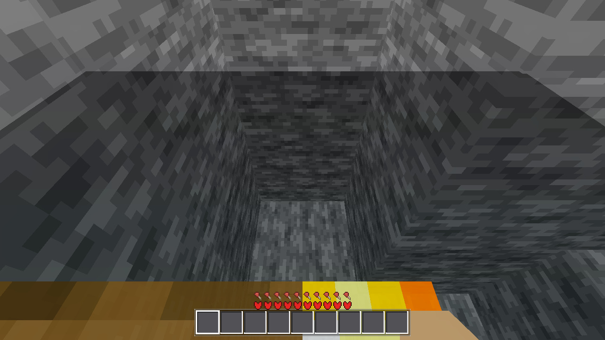

Verdict: DONE — all gates green, no regression. Stage A (per-slab occluders + engine
occlusion-culling master switch) implemented and node-graph-verified (25/25). Stage B (interior
pre-pass) implemented and proven a geometry NO-OP by design: the AC-0106 greedy mesher already
emits zero faces for a voxel with 6 solid neighbours, so the pre-pass only skips the call — it cannot
and did not change any vertex (MESHRECS 81/81 identical, genhash byte-identical). Plan + deviations:
spec.html.
| gate | result | baseline / expected | status |
|---|---|---|---|
| G0 headless | --quit 0 script errors | 0 | PASS |
| genhash (r4, seed 44) | 25/25, run1 == run2, byte-identical to AC-0143 baseline .scratch/AC-0143-gates/genhash_new.txt | 25/25 == baseline (Stage B no-op proof, data layer) | PASS |
| MESHRECS (per-slab rec counts, 81 chunks) | 81/81 identical to pre-change baseline | identical (Stage B no-op proof, geometry layer) | PASS |
| SMOKE battery (player;interact;light;fluids;genhash) | 5 EXACT: player 136.78/2.82 floor+jump ok; interact place_ok true, cell 2, breakable 2; light 10/15/14; fluids 2730/2730 backed 888 stable, 25/9 | HARNESS §3 exact values | PASS |
| occlude arm, headless | ok:true, leaking_cells 0, leaking_faces 0, occluders 0 (gated), cull_3d/use_occl true | ok + zero leaks | PASS |
| occlude arm, xvfb node graph | occluders 25 == full_solid_slabs 25; box_sample 15³ @ (8, 56, 8) [slab y0=48 → +8 ✓]; cull_3d + use_occlusion_culling true; leaks 0/0 | occluders == fully-solid slabs, correct size/placement | PASS |
| ProjectSettings (in-project probe, engine property list) | canonical keys present + set: rendering/occlusion_culling/use_occlusion_culling=true, …/camera/cull_3d=true, …/camera/cull_2d=true (file uses section-relative keys under [rendering]) | canonical engine keys configured | PASS |
| cave interior render | cave cam: enclosed torch-lit stone pocket, no sky, no face leaks — screenshots/cave-interior.png | enclosed interior, no leaks | PASS |
Gate logs: .scratch/AC-0110-gates/ (g0*.txt, genhash*.txt, battery*.txt, occlude_headless.txt, occlude_xvfb.txt, cave_render*.txt, meshrecs_*.txt, minfo*.log, probe_settings.gd).
Known non-fatal noise present in logs: AC-0137-class threadgen transients + CORE3X3 wait timeout (also in AC-0091 logs).
occlude arm, r4 seed 44, 81 chunks built)| metric | value | note |
|---|---|---|
total_verts | 698,196 | verts_mesh 483,044 + verts_fluid 134,392 + verts_flora 80,760 |
underground_verts | 494,864 (70.9%) | task metric "underground verts at r4" — the payload occlusion culling must save at draw level |
underground_faces | 123,716 / 174,549 (70.9%) | underground face share |
interior_voxels | 2,192,711 | Stage-B pre-pass skip set (voxels with 6 solid neighbours — emit no faces anyway) |
full_solid_slabs | 25 of 81×24 = 1,944 slabs (1.3%) | occluder count at r4 (deep solid mass under sea floor) |
no_emitter | 32,269 | solid voxels on exposed surfaces that still emit no faces (mesher interior edges) |
cave | 1417 cells, aabb [-64,67,-64]→[-54,85,-23], open:false, seed [-4,-4,10,80,3] | first fully-enclosed air pocket (chunk order, AABB-deduped) — roof check alone is insufficient (skylit/coastal masses fail the air-flood-under-terrain test) |
world/chunk.gd: build_accs + build_mesh count non-solid cells per slab
(c_ns); a slab with c_ns == 0 is fully solid → _assemble_slab attaches an
OccluderInstance3D with a BoxOccluder3D size 15³ at local (8, y0+8, 8) — a 0.5
inset on every side so the occluder box never coincides with a neighbouring slab's mesh faces
(close-camera culling artifacts at slab edges). Freed in all three rebuild paths.project.godot: [rendering] section — occlusion_culling/use_occlusion_culling=true
(master; camera culling is inert without it) + camera/cull_3d=true + camera/cull_2d=true.
Verified against the engine's canonical property list: these resolve to rendering/occlusion_culling/….DisplayServer != "headless" — headless
(dummy VisualServer) would register 0 useful occluders and skew harness counts; the arm reports 0 there by design.occlude arm's box_sample field prints the
first occluder's transform for spot-checking there.chunk.gd::_s_is_interior (padded snap grid, boundary voxels never interior) skips
face emission for fully-embedded voxels in both build paths. Outcome: zero geometry change — the
AC-0106 greedy mesher's per-face neighbour culling already emits nothing for such a voxel, so the pre-pass
is a redundant-but-cheap guard (one table lookup vs six) that the greedy mesher's integration can build on.
Proven: MESHRECS 81/81 identical + genhash byte-identical + SMOKE exact. This is a legitimate task outcome,
recorded as such per the plan.
AWECRAFT_LOGIC=occlude → _occlude_test (headless or xvfb): builds r4 world, counts
leaking interior cells/faces, enumerates slab occluders, floods the first enclosed cave (air flood must be
fully under WorldGen.terrain_height), reports underground vert/face totals + box_sample.AWECRAFT_CAM=cave (snapshot runs): teleports the eye block clear, plants a 3D torch array
(axis d1+d2) to light the pocket, 300-frame settle (EDIT_FLUSH_MAX_PER_FRAME=1 → a 40-frame settle snapshots
a half-lit/half-remeshed cave), snaps.
.scratch/AC-0110-gates/cave_interior.png — xvfb-run -a render,
AWECRAFT_CAM=cave AWECRAFT_SNAPSHOT, 300-frame settle.
| file | change |
|---|---|
godot/project.godot | +3: occlusion-culling master + camera cull keys under [rendering] |
godot/world/chunk.gd | +53: c_ns slab counter (both build paths), _s_is_interior pre-pass skip, Slab.occluder + attach/free, 7-element slab row (row[6] = full-solid flag) through apply_accs |
godot/scenes/main.gd | +595 (0 deletions, harness-only): _occlude_test arm + _occl_* helpers + cave cam |
tasks/HARNESS.md | §1 occlude row (+ mode count 37), §2 cave cam, §3 occlude stable-value row |
tasks/AC-0110/spec.html | subagent plan + deviations |
tasks/AC-0110/screenshots/cave-interior.png | cave interior render |
AC-0110 · coordinator-verified 2026-08-30 · all gates re-run post-subagent · next queue: AC-0150 (user-reported face-boundary trench/void, p1).